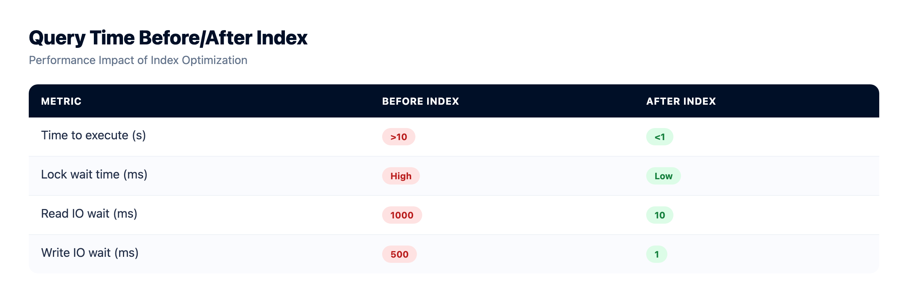
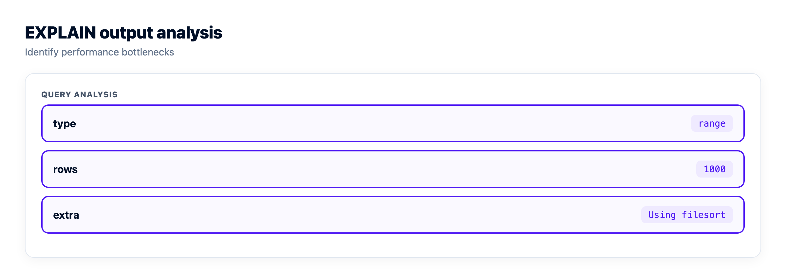

MySQL Performance Tuning for App Developers
Your app flew on day one. A few hundred thousand rows later, a page that loaded instantly stalls for two seconds, and nine times out of ten the database is the reason. MySQL performance tuning is the skill of proving that, then fixing the real cause instead of pasting config off a blog. Here's the order I'd hand a developer who owns a Laravel, Rails, Django, or Prisma app and just watched a query that flew at ten thousand rows fall over at five million: find the slow MySQL queries first, read the MySQL EXPLAIN plan, add the right index, size the InnoDB buffer pool, pool your connections, and resize the box last.
Measure before you touch anything. Turn on the slow query log to catch your slowest statements, run EXPLAIN to see why they're slow, and add an index on the columns you filter, join, and sort on. Size the InnoDB buffer pool so your hot data and indexes live in RAM, pool your connections so MySQL isn't buried under them, and resize the server only when it's genuinely maxed. In that order.
Turn on the slow query log before you touch a knob
The cheapest tuning mistake is also the most common. Someone reads that the InnoDB buffer pool should be most of your RAM, bumps a setting, restarts, and the slow page is still slow. They tuned before they knew what was slow. MySQL will tell you which statements hurt, if you ask it.
The tool for that is the MySQL slow query log. It records every statement slower than long_query_time seconds, so you get a list of real offenders from real traffic. Turn it on and set the threshold low enough to be useful:
-- log anything slower than 1 second
SET GLOBAL slow_query_log = 'ON';
SET GLOBAL long_query_time = 1;
-- confirm it's on and see where the file lives
SHOW VARIABLES LIKE 'slow_query_log%';
SHOW VARIABLES LIKE 'long_query_time';Let it run through a normal day, then rank the log instead of reading it line by line. mysqldumpslow ships with the server and groups similar statements so the worst offenders float to the top:
# the ten queries with the highest total time
mysqldumpslow -s t -t 10 /var/log/mysql/slow.logThat's your ranked to-do list. Sort by total time, not just per-query time, so you also catch the query that's quick on its own but runs ten thousand times a minute.

Read the EXPLAIN plan: the type column does most of the talking
Once you know the slow query, ask MySQL how it plans to run it. EXPLAIN shows the plan without executing the statement. On MySQL 8.0.18 and newer, EXPLAIN ANALYZE runs the query and prints real timings next to the estimates, worth using whenever the statement is safe to execute.
The field that matters most for app developers is type, the access method MySQL chose. It's a ladder from awful to great: ALL (a full table scan), index (a full scan of an index), range (an index range like a date window), ref (an index lookup by a non-unique key), and eq_ref or const (a unique or primary-key hit, the best you'll see). When you spot type: ALL on a big table, that's a type ALL full table scan, and it's usually a missing index shouting at you.
Run EXPLAIN on a filter with no supporting index and you'll see something like this:
mysql> EXPLAIN SELECT * FROM orders WHERE user_id = 42\G
*************************** 1. row ***************************
id: 1
select_type: SIMPLE
table: orders
type: ALL
possible_keys: NULL
key: NULL
ref: NULL
rows: 2013480
filtered: 10.00
Extra: Using whereRead the three fields that carry the story. type: ALL is a full scan, key: NULL means no index was used, and rows: 2013480 is roughly how many rows MySQL expects to examine to answer a query that returns maybe eight. Reading two million rows to hand back eight is exactly the shape of a missing index.
The Extra column is the other half of the plan, and two values are worth learning on sight. Using filesort means MySQL sorted the rows itself because no index gave them back in the order you asked for, which gets expensive on big result sets. Using temporary means it built a temporary table to finish, common with GROUP BY or DISTINCT on unindexed columns. A friendlier value is Using index: a covering index answered the query without touching the table.
Add the index, run the same statement, and the plan changes shape:
CREATE INDEX idx_orders_user_id ON orders (user_id);
mysql> EXPLAIN SELECT * FROM orders WHERE user_id = 42\G
type: ref
key: idx_orders_user_id
rows: 8
Extra: NULLSame eight rows, but MySQL went straight to them. This is the highest-leverage move in the whole game, and it's why the method starts with measurement: you can't index a query you haven't found.
When you can run the statement, EXPLAIN ANALYZE confirms the win in real numbers, not estimates:
-- MySQL 8.0.18+: runs the query and prints actual timings
EXPLAIN ANALYZE
SELECT * FROM orders WHERE user_id = 42 AND created_at > NOW() - INTERVAL 30 DAY;
MySQL performance tuning, ranked by payoff
Not every lever earns its keep. Some take five minutes and cut a query by 99 percent; others take an afternoon and buy you ten. Here's how I'd rank them for an app that isn't yet at web scale.
| Lever | What it fixes | Payoff vs effort |
|---|---|---|
| Add a missing index | Turns a type ALL full scan into a ref or range lookup | Huge payoff, low effort |
| Fix N+1 queries | Collapses hundreds of round trips into one | Huge payoff, low effort |
| Pool connections | Stops the "Too many connections" wall under load | High payoff, low effort |
| Rewrite the worst queries | Reads fewer rows, kills Using filesort and Using temporary | High payoff, medium effort |
| Size the InnoDB buffer pool | Keeps hot data and indexes in RAM instead of on disk | High payoff, medium effort, needs RAM |
| Other server knobs | Marginal gains, easy to get wrong | Medium payoff, handle with care |
| Resize the server | More CPU and RAM for a genuinely maxed box | High payoff, costs money |
Look at the top two rows. Most of the slow MySQL I've been handed came down to a missing index or an N+1 loop, not hardware and not a config file. My advice on memory: size the buffer pool once, then stop poking knobs and go add an index.
Indexes done right in MySQL (an index isn't free)
An index is a sorted structure that lets MySQL find rows without reading the whole table. InnoDB uses a B-tree by default, and it's right for almost everything an app does: equality, ranges, ORDER BY, and most joins. A few rules decide whether it actually gets used.
-- single-column index for a common filter
CREATE INDEX idx_orders_user_id ON orders (user_id);
-- composite index: column order matters. This one serves
-- "a user's orders, newest first" and "just this user's orders"
CREATE INDEX idx_orders_user_created ON orders (user_id, created_at);- Leftmost-prefix rule. A composite index on
(user_id, created_at)helps a query that filters onuser_id, or filtersuser_idthen sorts bycreated_at. It does nothing for a query that only filterscreated_at. MySQL reads a composite index left to right, so the first column has to be in play. - Covering indexes skip the table. If an index holds every column a query needs, MySQL answers straight from the index and you'll see
Using indexinExtra. Great for a hot read that only pulls a couple of columns. - Don't wrap an indexed column in a function. It quietly kills index use.
-- the index on created_at is ignored: the function hides the column
WHERE DATE(created_at) = '2024-01-01'
-- rewrite as a range and the index works again
WHERE created_at >= '2024-01-01' AND created_at < '2024-01-02'Now the honest part: an index isn't free. Every INSERT, UPDATE, and DELETE updates every index on the table, so ten indexes mean each write does ten times the bookkeeping. They cost disk and memory too. Index the columns you filter, join, and sort on, not every column. The deeper mechanics live in database indexing explained.
Why isn't MySQL using my index? Usually one of a few reasons. You wrapped the column in a function, like the DATE() case above. Stale statistics sent the optimizer down a bad path, so run ANALYZE TABLE orders. The query returns a big fraction of the table, so a scan is genuinely cheaper and the optimizer is right. Or the types don't match between the filter and the column. On a small table a full scan really is faster, so trust the optimizer there.
The InnoDB buffer pool, in plain terms
If you learn one thing about MySQL memory, learn this. The InnoDB buffer pool is the chunk of RAM InnoDB uses to cache data pages and index pages. When the rows and indexes a query needs are already in the pool, the read is served from memory in microseconds. When they aren't, MySQL goes to disk, orders of magnitude slower. Your whole goal is to keep the working set resident in the pool.
On a dedicated database box a common guideline is to give the buffer pool a large share of the machine's RAM, since little else runs there. That's why innodb_buffer_pool_size is the first memory setting anyone mentions. On managed MySQL the pool is sized to your plan, so the practical lever is the plan itself: when your working set outgrows the pool, you resize the server for more RAM instead of hand-editing a config file. More data in the pool means fewer trips to disk.
That's worth knowing before you launch, not after. When MySQL is one of seven managed engines you provision in a click (alongside MariaDB, PostgreSQL, Redis, Memcached, Elasticsearch, and MongoDB), the plan you pick at launch is the buffer pool decision, made under a different name.

You can watch whether the pool is doing its job. If reads keep hitting disk while the box has spare CPU, your working set no longer fits, and more RAM is the honest answer:
-- how big the pool is, and how much of it is in use
SHOW VARIABLES LIKE 'innodb_buffer_pool_size';
SHOW STATUS LIKE 'Innodb_buffer_pool_read%';
-- the deep dive lives in the engine status
SHOW ENGINE INNODB STATUS\GConnections and the "Too many connections" wall
Every MySQL connection is a thread with its own memory. That's lighter than a full process, but connections still aren't free, and max_connections is finite (the default often sits around 151). Cross that ceiling under load and every new request meets the error everyone hits eventually:
ERROR 1040 (HY000): Too many connectionsThe instinct is to raise max_connections. Resist it. More allowed connections means more memory reserved for idle threads, and per-connection buffers like sort_buffer_size multiply your worst-case memory. The real fix is MySQL connection pooling: a small, reused set of connections that many requests share instead of each opening its own.
Your framework almost certainly pools already: the mysql2 pool in Node, HikariCP in Spring, SQLAlchemy's engine, and Laravel's persistent connections all keep one. Set a sane pool size per app instance rather than a connection per request. Running many app servers or something serverless? A proxy such as ProxySQL funnels thousands of client connections down to a handful of real backend ones. A good starting pool is a small multiple of your CPU cores, and most apps need far fewer than they reach for. To see what's connected:
SHOW FULL PROCESSLIST;
SHOW STATUS LIKE 'Threads_connected';
SHOW VARIABLES LIKE 'max_connections';One practical detail: keep the pool size in the same environment variable that holds your connection string, not in code. On a managed database that means resizing the pool is a config change and a restart, not a deploy, which matters at 2am when you're trying to stop a connection storm rather than ship a release.

The full reasoning, with pool sizing math, is in database connection pooling.
When the honest fix is a bigger server
Sometimes the answer really is more hardware. If CPU sits pinned near 100 percent, RAM is exhausted so the buffer pool can't hold your working set, or you're I/O bound after the queries are already tuned, then the box is the bottleneck. Sizing up is the one tuning move that's genuinely someone else's problem: on managed MySQL, vertical resize is self-serve, so more CPU and RAM is a click rather than a rebuild, and backups and patching keep running through it.
The reason this section comes last is the graph below. Read CPU and RAM next to your slow query log findings, because the two answers look nothing alike. Slow pages while CPU idles is a query or index problem, and no amount of plan is going to help. Pinned CPU after you've already indexed is the honest case for a bigger box.

But tune queries and indexes first. Bad SQL scales badly no matter the hardware. A missing index that scans five million rows scans them a bit faster on a bigger box, then falls over at ten million. Doubling your server to paper over an N+1 loop is the most expensive way to not fix a bug. For read-heavy workloads, a managed Redis cache in front of your hottest reads often buys more headroom than a bigger database will.
It'll get slow again. Work the checks in this order
Tuning isn't a project you finish. Traffic grows, a feature adds a query, someone drops an index in a migration, and the same page crawls again six months later. So keep the order, because the cheap checks are also the ones that usually find it. Column three is the part most guides leave out.
| # | What you're seeing | Where to look | Who actually fixes it |
|---|---|---|---|
| 1 | One page went slow | Slow query log, ranked by total time | You. The log names the statement, and nothing else will. |
| 2 | The named query examines millions of rows | EXPLAIN: read type, key, rows | You. A missing index is a schema decision. |
| 3 | Hundreds of near-identical queries per page load | Your ORM's eager loading | You. N+1 is application code, all the way down. |
| 4 | ERROR 1040: Too many connections | Pool size per app instance | You, in config. Raising max_connections just moves the wall. |
| 5 | Reads keep hitting disk while CPU has headroom | Innodb_buffer_pool_reads climbing | Shared. The working set outgrew RAM, so the plan is the lever. |
| 6 | CPU pinned after the queries are already tuned | Server health graphs | The platform. Resize up, self-serve, no rebuild. |
| 7 | Data is wrong or gone | Whether you have ever tested a restore | Shared. Backups run on a schedule; proving they restore is on you. |
Two honest notes on that last column. No host fixes a missing index, ours included. A managed MySQL patches the engine, backs it up, and locks it to your app server's IP, and it will still cheerfully scan five million rows on your behalf at any plan size, forever. Managed means the box is looked after, not that your schema is.
And resizing is a one-way street for disk. You can size a server up yourself, but you can't shrink a disk afterwards, so grow in steps instead of jumping to a number you're guessing at. On the backup half, server backups covers the restore drill, and managed MySQL hosting covers what's handled for you versus what stays yours.
Managed, backed up, and still yours.
Seven managed engines, provisioned and patched for you, with access controlled and backups running automatically. Your schema, your queries, and your data stay exportable with the standard tools.
- ✓ Seven managed engines
- ✓ One-click launch
- ✓ Automatic backups
- ✓ Controlled access
- ✓ Standard connection strings
- ✓ Free migration assistance
FAQ
How do I find slow MySQL queries?
Turn on the slow query log (SET GLOBAL slow_query_log = 'ON', long_query_time = 1), let it run through real traffic, then rank it with mysqldumpslow -s t. Sort by total time so you also catch fast queries that run thousands of times.
How do I read a MySQL EXPLAIN plan?
Read three fields: type (the access method, where ALL is a full table scan and ref, range, or eq_ref mean an index was used), rows (estimated rows examined), and Extra (which flags work like Using filesort). A big rows for a small result signals a missing index.
What does type ALL mean in EXPLAIN?
type: ALL is a full table scan: MySQL reads every row and discards the non-matches. It almost always points at a missing index on the column you filter or join on.
What is the InnoDB buffer pool?
It's the RAM InnoDB uses to cache data and index pages, so reads hit memory instead of disk. Keeping your working set resident in the buffer pool is the single biggest MySQL memory win.
Should I increase innodb_buffer_pool_size?
On a dedicated box the pool gets a large share of RAM, and on managed MySQL it's sized to your plan, so the practical move is to resize for more RAM. Add the right indexes first, since an index usually beats any memory change.
Why is MySQL not using my index?
Common causes: a function wrapped around the column (like DATE(created_at)), stale statistics that need ANALYZE TABLE, a query returning much of the table so a scan is cheaper, or a type mismatch. On small tables a full scan is often fastest anyway.
What does Using filesort mean?
It means MySQL sorted the result itself because no index returned the rows in your ORDER BY order, which is slow on large result sets. A composite index matching the sort often removes it.
How many connections can MySQL handle?
max_connections often defaults near 151, and past it clients hit ERROR 1040: Too many connections. Use a connection pool so requests share a small set, and add a proxy like ProxySQL if you run many app servers.
Does EXPLAIN ANALYZE run the query?
Yes. On MySQL 8.0.18 and newer it executes the statement and prints real timings beside the estimates, while plain EXPLAIN only shows the plan. Be careful on writes, since it will change data.
Will a bigger server fix slow MySQL queries?
Sometimes: if CPU is pinned or the buffer pool can't hold your working set after tuning, more RAM and CPU help, and a managed server resizes without a rebuild. But a missing index or N+1 loop scales badly on any hardware, so fix the query first.